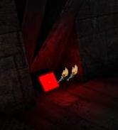
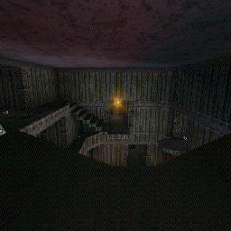
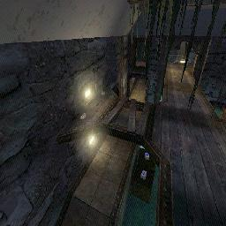
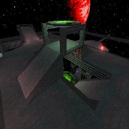
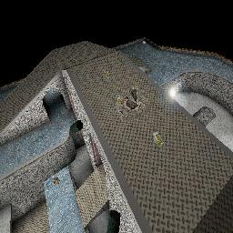

Making Architecture
Some basic and advanced techniques to improve your level and to take into consideration during the design process.
Break the Scale
A map made up of nothing but a few large subtractions and a few lights is not sufficient. Detail is needed. How?
The room shapes themselves should be more than a cube. Extrusions and recessions, sloping, etc. serve to break up the scale. The human mind needs comparisons to really appreciate the scale of something. When you first played onslaught, you thought a Goliath was unstoppable until you saw a Leviathan...
On top of the basic room structure, add detail with static meshes. These help the player form a sense of scale, making your bigger spaces seem that much more vast.
Another thing you can do is to try and change ceiling heights. That too will break up your scale. One of the most effective tricks that architect  Frank Lloyd Wright used to do was have a tiny entrance hallway with a low ceiling and then opened it up to a huge room giving a sense of grandeur and making that room seem bigger. You can do that in UT too.
Frank Lloyd Wright used to do was have a tiny entrance hallway with a low ceiling and then opened it up to a huge room giving a sense of grandeur and making that room seem bigger. You can do that in UT too.
When you use columns try and put them on a wider base so they are not straight. Using a cube as a base for round columns will also give your geometry more variety. Maybe even make an I beam as they look pretty rad. Aside from these possibly playing a role in your gameplay they will also help add more variety to the map.
Unity
Another thing is unity. You may often see cool architectural elements like trusses repeated throughout a building. This creates a sense of cohesiveness, as if the whole building was made by the same group of people in a single time period. Why would someone build a building out of mud with wooden beams and have the doorway made out of riveted steel? They wouldn't, unless they're insane, stupid, or happen to have a riveted steel doorway built and are only capable of building a building out of mud and wooden (it's very unlikely though). However, you could also have the approach that the structure was built by aliens, who may have radically different ways about thinking about things like this. Architecture that seems ludicrous to us may be perfectly normal for them.
Unity is just as important in outside spaces: you don't want one side of the map to be like Mars and another like Earth – unless of course you intend to tie it in with a dramatic feature like an eco dome or something. The thing about themes is that it can make or break a player's sense of immersion.
Immersiveness and the sense of space play a huge role in architecture. A good architect will account for what a person feels when in a particular space. In the case of UT this means that you want the player to be into your map. Think of it like this. You may have seen a movie that you hated because everything was so stupidly unreal (no pun intended) and made no sense. You couldn't get into it. That's what I mean. You need a sense of cohesiveness and a dose of reality along with the helping of unreality.
While it's important that your map is coherent, beware of remaining too similar throughout. While you do want repetition of key elements you want different areas to contrast while still obeying the overall theme. DM-Tempest is a good example of what I mean. You don't want to have a map that looks like it was made out of a million identical lego blocks, so beware of overusing the same static meshes and/or textures.
Proportions
Proportions are very important. Fortunately if you use the grid you already are doing proportional work to some extent. The thing about proportions is that they have a rhythm that makes it easier on the eyes. And let me tell you beauty is easy on the eyes. In fact there was a study that the better looking people are, the more proportional their facial elements are.
T1: I want a link to tell me where this study is, and who did it.
So for example, in your room the walls may be twice as long as they are high. The floor may have a raised platform about a quarter of its area in the center and the ceiling has an opening right above it covering about half of the area. This assumes that you aren't trying to evoke a chaotic feeling in the player, and it also assumes that the level isn't a city after being hit by a nuke, of course. If you have too much symmetry, the level becomes monotonous and seems like it's made out of a million identical lego blocks. Try to have a balance of symmetry and some very slight asymmetrical elements.
Lights
Lighting detail adds realism and atmosphere. Purely ambient lighting generally isn't very good looking. A light actor alone does not suffice.The light needs to come from somewhere. That's where the architecture aspect comes in. Try adding the static mesh "HumanoidArchitecture.Lights.PanLightB" behind your light actor. Looks better, doesn't it? Lights are some of the most overlooked things by new mappers.
Coloring is a must for good atmosphere as well. Try opening LightProperties and setting Saturation to 153. The light is now red. LightSaturation sets the extent of coloration. Now set LightHue to 35. The light is a good flame color.
Alternatively you could have a beam or something running over head with lights hanging from there. That may work too. Exactly why should you do this? Well for one thing because you should. When you break up the scale and make things less massier it becomes easier for us to relate to them. In case you didn't notice, our species (at least most of us) enjoys things it can relate to.
Their are many ways to make light sources. You could go into the 2D Shape Editor and make some simple shapes and turn them sideways in the editor and place a lightsource on them. A good package for lightsource textures are in the mine.utx package. You could also try to make a ground light that is right beside your hallways. These stand out good with red lights. (Only use red lights in dark areas for coolness) When your dealing with normal light sources you should scale down the radius of your lights because it just looks better to have the contrasts between the color from dark to light in your rooms as opposed to a totally bright room with no unity. Don't use the disco lights, this is what is called "OMG N00B |_1GH+1|\|G".

This is the DavidM red light that everyone hears about. 200 brightness, 8 radius, reddish color. |
You might also want to try to add a corona right in front of your light sources to make it stand out from down a hallway. You might also want to try a lightbox too. Lightboxes do a good job when you place an item right under them. You could easily make an overhead light that you can hang from the ceiling by taking a rectangle and having two other rectangles coming out of the top and extending to the roof. Those can also be substituted with chains or something from the VolumetricBuilder.

Here is an example of viewing a corona from down a hallway. Really stands out from a distance. |
If you got the spaceship alien style level you might want to use some texture palette loops to make the constant change in color. It adds to style but it looks kind of weird from ground lights so I'd place them up near the ceiling.
When your dealing with liquids around you you might want to place some light around by the lava or slime to give effect on the surroundings, you don't have to lower the light radius so much with lava.
Interactive Environment
Another good thing to do is to make your map have lots of interactivity so it never seems to be boring. You can use AmbientSound to give players a sense of environment. You can place these near water, lights, machinery etc. You might also want to try to set up button activated traps and doors to give the players more interactivity. Another thing is give the player a dangerous area in the map. It gives the player something to be carefull of and will most definitely keep you more on the edge in a battle. This can be done easily in a space map where edges of plateforms mean your life. Also can be done with lava or slime pits or maybe even a large rotating fan of death. Or an Ion beam.
You can also try to zone in an area and turn it into a healing zone like HealPod by adding a ZoneInfo inside your zoned in area and go to ZoneInfo and changing bPainzone to True and DamagePerSecond to a negative value.
Another great idea for an interactive environment is to create lots of destructable terrain in your level; which can be done buy subtracting things and making movers in its place and setting them to move out of the level when shot (preferably by a rocket or and explosion).
Another thing you might consider is maybe some laser trip bombs. You can use these to make something valuable hard to get to. For example surround your redeemer with lasers. Another good idea is just use ClientScriptedTextures or Mychaeel's Screen to give your map some displays that will tell current ranks of players and other information. Another crazy idea is touchplates that open up walls with special items like shield belts in them. A nice idea is a trap room, where you have a room with a powerup inside, but somebody from the outside can pull switch and kill everyone inside, like for example in DM-Pressure.
Fill in the Blanks of Your Map
After your done getting the general look of your map you should go through it again and create some objects in the way like pillars and remove pieces out of the floor. An overused cliche that is used everywhere in first person shooters is a floor tile raised and moved over some and rotated about 45 degrees. This might makes sense in a ancient stone ruins, but for example in Doom 3 on the first level, it's as if some engineer got drunk and decided to open random parts of the floor with a crowbar, exposing the electronics beneath. You might also want to try to flood lower floors of your map with a thin layer of water for extra looks (Snowdog's JB-Talaeron is a good example). Maybe remove some planks in a wooden bridge. Crates are ok too but they mostly block you from the action so stick them in corners and not in the middle of your level, unless you use them as cover or stairs. You might also want to put masked weeds or chains on pillars an overhead beams to hang down and provide some cover. When you make all your platforms and such you have to take into consideration the weight of such things and what would it take for them to be suspended above the ground. Use this idea to create lots of beams linking your platforms to the walls and ground. Try to make all your beams connect together somewhere; it looks nice and fills in spaces.

A nice example of the work of Hourences... Non-stop action and masterful details. |
Gravity/Velocity Changes
If you are doing a space map or something with an antigravity room you might want to try to zone in the room with lots of zone portals and then add a ZoneInfo in the area and set the ZoneGravity property. You can also change the ZoneVelocity property in ZoneInfo to make it feel like your being pulled up or down or where ever, works great if you have a fan somewhere or a zip tube of somesort. Kickers are a great thing to have in a spacemap and can really get the flow and z-axis fighting going. In UT2003/2004 you should probably use volumes instead.
![[KickerAction]](images/kickeraction.jpeg) A perfect example of how to keep flow going everywhere with kickers. |
Ever hear of a gravity kicker? Try to make a tube or a pit with gravity going backwards, you'll see just how neat it actually is. Or another neat idea is to surround your level with volumes that are all backwards gravity to the direction. Meaning that say you shoot something and miss your enemy, it will turn around and fly back at you. Creating a whole new theme for a level. See, gravity aint so bad now is it!
Add New Textures To Old Surfaces
A good way to get rid of the boring old plain textures on walls, floors and ceilings is to make a cube or whatever shape you want and add it to the surface of another texture. It makes it appear to be part of it and will randomize your textures and make them look good. You can use this to make good looking edges around ramps and floors and to simulate carpets on the floors. You can even place those CTF symbols on the walls which is handy when your mapping for CTF. Easy as adding (not subtracting) a textured cube right under your work.

Brush sinking action on the sides of all the plateforms. |
Brush Sinking explains this technique in detail.
When Placing Items
When you start to place items you might not want them to be sitting on flat ground because that would be quite boring indeed. You might want to create thin cylinder brush for it to sit on or maybe make some kind of stair set in a corner going up to the item. In UT2003/2004 xWeaponBases already serve this function. You might also want to place items in holes in the floor. Another thing to remember when placing weapons is to place them where someone is going to be. Not in a corner of a wide open area. Try to place everything on a path that the players would take so that it keeps the action going. Health on the other hand should be against walls and corners or even in a dangerous area so that it is more of a risk to get to because you have to leave your normal path. Ammo should most likely be by your weapon but if you spread it around you wont do that much harm. It makes it a challenge to keep killing with a good gun. See Map Flow and Inventory Item Placement for more.

This is not a boring space to go for a weapon. You have to climb up into an open area and notice the brush sinking underneath the weapon. |
Skybox Seems Plain – What Do I Do?
When you make your SkyBox all nice you may want to consider putting some architecture in the way of the skybox to make it look nicer. This can be done in an inside building map with simple overhead beams and maybe grates. In an outside map it should be left fine because it just would look weird unless it goes with the theme. Another thing to put infront of your skybox could be a window, like a skywindow over the top of your level with beams going through it and maybe even make the window breakable.
Not only is the presentation of the skybox important, but the actual appearance of it is just as vital. A proper skybox can give the player a true sense of awe (for example, the player notices comets strewn throughout a starry sky, and is so impressed that he/she is compelled to stop and look up for a few seconds). For outdoor maps, one technique is to make two sheets (one higher than the other) leaving the lower sheet to be translucent. By mixing and matching the textures of each sheet (cloud textures, skies, space etc.) and by placing lights in between the sheets, one can achieve more realistic skies. It's also a good idea to make the sky in your skybox pan (in the case of the two-sheets example, making one pan at an angle slightly greater than that of the other sheet is realistic).
![[AmonSkybox]](images/amonskybox.jpeg) A shot from Hourences' DM-Amon. Some nice architecture in the way of the skybox to add effect. Try to picture that missing... Just won't happen will it. |
Particle effects in skyboxes can also be a good effect.
Level Layout Tips
When designing a level it is really all up to you to do but you might want to consider a few things. When linking rooms try to provide multiple ways in and out of them to get good flow going; you can do this by putting hallways on ground level and on raised platforms. Another good idea may be to use teleporters. When you design large rooms and they seem so boring try to add ledges around them. When making lifts try not to make one so that when you get in you have to turn around to get out, unless it's part of the risk fact of using the lift. Give the players the choice of going up the slower stairs, or going up the faster lift that requires turning around.
Think Technically
Created a nice ledge or machine in the level? Think that's enough? Well you're WRONG! As mentioned above, we like something we can relate to, so always think about making it as realistic as possible, unless in 0 gravity, or it's made out of some kind of super-light but strong material, that ledge or machine or very high wall is gonna need supports to keep it standing, you could even have a trigger to snap the supports and make the object fall down, killing anyone underneath it, MUAH HU HU HU HA HA HAAA!!! See Triggers (UT), Mover and Making Glass Break to make this happen (you'll have to make the wall break instead though)
![[supports]](images/supports.jpeg) Here you can see the supports holding up the grating platform, taken from my DM-Encarceration (still in development) |
It's All About Flow
Newbie mappers might make the mistake of drawing inspiration from their home or their school. In real life, many rooms have a single entrance / exit, and a layout designed for watching TV, preparing food, or listening to the lecture. This is not the purpose of spaces in UT. In UT your tasks are pretty much kill, avoid being killed, hide, or get to a pickup.
Look at the options a player has at any given point in your map. I wouldn't want to be walking down the long narrow corridor between two rooms when a guy appears at the far end stacking up multiple rockets. What are my escape routes? Similarly, After getting to a pickup, it's a good feeling to be able to choose from a couple of options about where to go next without having to turn back. If you look at good maps, you rarely see actual definable rooms: you see a large space with BSP slightly limiting where you can go, what you can see, and who can get you: this is a sign of good flow. Avoid the "room, corridor, room" syndrome, loathed by all reviewers. The exception is when you place a good powerup like a redeemer or udamage in a narrow hall, making it risky to go and get it, but worth the risk. It forces the player to make a choice: "Do I go into that narrow hall with only one way out and get the 'deemer, and possibly getting mowed down before I can reach it, or not?"
Think of flow as a way to move around a level, multiple ways in and out of each area. Each area feels different. Kickers, lifts and teleporters everywhere. No hassle to get to any guns or ammo. No problem finding health.
You can tell if a level has flow if you know where a weapon is going to be placed, or what must be done to open that special door. Just things mappers do a lot that help you quickly get a complex map down pat while playing that make it all that better. Try to avoid cubish maps, or perhaps start with a cube and shape it. Think of z-axis gameplay all the time. Unless your going for a total carnage approach you might want extra ledges and breaking up the height scale on things. That way you can shoot at things from all angles.
See Map Flow for more.
Approaches To Level Design
Everyone has to start out somewhere, with a blank area. But everyone has their own approach at creating their levels.
The Twiggman
I (The Twiggman) have just discovered what may be a simple and yet professional looking approch. Make note I have not used it yet in level design but so far I think it may help those cube looking hallways and such really take form and flow with the same theme throughout the level. Ok here I go at explaining this one. First just make different parts of your map. Like make a high detailed 512X512X512 area which can be used as a hallway section. Then copy paste that to a layout. Or wherever you may see fit. And then next make high detailed corners and so on. Do all the parts seperate then connect them. It also allows you to put the details and things very early on so that you can build on them later. But it will provide a nice looking template for the level if you run out of good ideas for some parts. And you can also use your little template area for other maps too. Lol some of my maps have been really rushed, I dont even want to talk about fractal 2. Must have been on crack that day. But the next thing to be released I will try this approch. Seems to look nice so far though. As for the layout, I usually end up freestyling them. If I ever plan anything it usually turns out way off scale, no flow or connectivity so in my case it's better to go with freestyling.
T1: Isn't this generally the idea behind staticmeshes?
Putting Feelings Into A Level
Lets start with a quote from Hourences.
"A feeling is being created by the perfect balance between all aspects, starting from architecture, to details, to light, to music, to sound to effects etc. cliches work fine too, all those things you see in horror movies for examples its emotion, and emotions aren't bound to laws and rules, hard to make up a schedule on how to work then."
As he stated, a feeling or mood can be placed into a level through perhaps lighting techniques. Use the same colors throughout a level, or perhaps try for the same shadowcasts. Gives a unique feeling. Or maybe you don't want to have anything look the same.
Related Topics
Discussion
JustaAverageKid: This page could use some screenshots, let's use example maps or existing maps for easier understanding. So far, it's looking great 
"Justus" That's what I thought myself more screenshots would help.
The Twiggman: I'll see what I can do about the screenshots, I'll take a few example shots and try the uploaded and see what happens. 
Luggage: I thought this was about architecture... Wtf do items and ambientsounds have to do with architecture? I'd figure that scaling, lighting and shapes are the most important points about architecture. Lighting influences scale - dark stripes in corridors create a sense of distance for example. Shapes are the very basic thing about architecture. Not indiviual shapes, but the piece of architecture as a whole. (→ Cohesiveness...)
It's about breaking lines too. If you create your first corridor, you got lots of horizontal lines. Break them up with some vertical "trim", and add some atmospheric lighting... and you've got a w00ty stylish corridor. (Sorta)
Architecture flows. It's not seperate parts. It all goes together.
The rest is a question of style, i.e. your personal development as an (architecture) artist.
Tarquin: I think some items here & on Mapping For DM could be moved to their own page. Some stuff could be moved to Map Flow or one of the Lighting pages.
EntropicLqd: One thing that would be nice is some references to books on Architectural styles. I've been trying to find one with lots of good pictures (cos I'm lazy) but not suceeded so far.
The Twiggman God knows how this turned out to be another mapping tips guide but anyone can easily add tutorials to make architecture. Their sure is a lot of tips in here; I usually put new information that I find and use in here so it's quite a handy bunch to read up on.
Legal: Pics are broken  Btw Twiggy, done any maps for SWAT 3 as Stickman?
Btw Twiggy, done any maps for SWAT 3 as Stickman?
The Twiggman Wow, haven't been around here in awhile. lol, no I haven't, must be some other stick like person
The Twiggman Still adding info wherever possible to this source. It's a good read now and again.
Sweavo: I made some pretty substantial changes to a few parts - some rewrites, some moving of paras. I thought some parts lost the way a little bit, plus that one para actually asking us to re-write it! ... But i've not addressed the refactoring issue as I'm not familiar with the other pages mentioned. Hope I've not pee'd anyone off too much.
Refactoring
Tarquin: parts of this page should be moved to Adding Polish To Maps and Mapping Checklist.
ZxAnPhOrIaN: Yeah, and there should be a combined [Map Enhancements]? page also.
SuperApe: All design elements here are covered in Map Design and Map Flow. To me, this feels like one big rant. This should either be refactored into a tutorial or into the above mentioned pages (i.e., Adding Polish To Maps and Mapping Checklist).
Refactor Me – see Refactoring Discussion above